UDN
Search public documentation:
ViewportToolbarJP
English Translation
中国翻译
한국어
Interested in the Unreal Engine?
Visit the Unreal Technology site.
Looking for jobs and company info?
Check out the Epic games site.
Questions about support via UDN?
Contact the UDN Staff
中国翻译
한국어
Interested in the Unreal Engine?
Visit the Unreal Technology site.
Looking for jobs and company info?
Check out the Epic games site.
Questions about support via UDN?
Contact the UDN Staff
ビューポート ツールバー
- ビューポート ツールバー
- 概要
- ビューポート オプション
- Viewport Type (ビューポートのタイプ)
- Real Time (リアルタイム)
- View Modes (ビューモード)
- Game View (ゲームのビュー)
- Lock Viewport (ビューポートのロック)
- Lock Selected Actors to Camera (選択したアクタをカメラにロックする)
- Level streaming Volume Previs (レベルのストリーミングボリュームのプレビジュアル化)
- Post Process Volume Previs (ポストプロセス ボリュームのプレビジュアル化)
- Camera Movement Speed (カメラの移動スピード)
- Play In Viewport (ビューポートでプレーする)
- Tear Off Floating Copy (フローティングコピーを引き離す)
- Maximize Viewport (ビューポートの最大化)
概要
ビューポート オプション
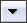
このボタンによって開かれるメニューには、多数のオプションの中から選ばれたものが入っています。そのうちいくつかは、ツールバーの所定の場所にボタンとして配置されています。そこにあるオプションの中には、表示フラグ、ビューモード、ビューポートのタイプなどがあります。 2011年10月以降、ビューポートオプションを右クリックすると、スタンドアローンの 表示フラグ ウインドウが現れるようになりました。これによって、ビューポート内で表示されているものを制御することが容易になります。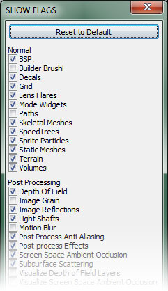
Show (表示)
このオプションによって開かれるサブメニューには、あらゆる種類の表示フラグが含まれています。この表示フラグは、on と off に切り替えることができ、それによって、ある種のジオメトリまたはビューポート内のヘルパーの表示、非表示を切り替えることができます。現在の表示フラグをデフォルト値にリセットするオプションもあります。これは、ビューポートに表示されるべきものが表示されていない場合に大変役立ちます。また、コリジョンを表示する際、コリジョンモードを設定することもできます。 各種表示フラグについての詳細は、 Show Flags (フラグを表示) のページをご覧ください。Show Volumes (ボリュームの表示)
このオプションによって開かれるサブメニューには、使用可能な各種ボリュームの表示を切り替えるフラグが含まれています。すべての表示、非表示も可能です。Show Groups (グループの表示)
このオプションによって開かれるサブメニューには、ユーザーによって作成されたあらゆるグループとそのグループ内にあるアクタの表示を切り替えるフラグが含まれています。すべての表示、非表示も可能です。Viewport Type (ビューポートの種類)
このオプションによって開かれるサブメニューには、使用可能なビューポートの種類が含まれています。これには、Perspective (透視図法)、Top (上から)、Front (正面から)、Side (横から) があります。現在のビューポートを、どの種類のビューポートにも切り替えることができます。Realtime (リアルタイム)
このオプションを on に切り替えると、アニメートされたマテリアルおよびパーティクルエフェクト、サウンドなどのためのビューポートで、リアルタイムのフィードバックが有効になります。 Hotkey: Ctrl + RShow FPS (FPS の表示)
このオプションを on に切り替えると、現在のビューポートの中に、レベルがレンダリングされている現在の FPS (秒単位のフレーム数)が表示されます。これによって、パフォーマンスに問題がありそうな領域には、すばやくフィードバックが与えられます。ただし、覚えておくべきは、エディタ内とレンダリングされているビューポート内では他にも進行しているものがあるということです。したがって、純粋な数という観点から見ると、FPS が常に正確であるということにはなりません。 Hotkey: Shift + HShow Stats (統計の表示)
このオプションを on に切り替えると、レベルエディタ内のビューポートにおいて、統計の表示が有効になります。これは、ゲーム内とまったく同じように表示されます。さまざまな統計セットを有効にするには、ステータスバーで、エディタのコンソールにコンソールコマンドを入力します。 Hotkey: Shift + L どのようなコマンドが使用可能であるかということに関しては、 Statistics Console Commands? をご覧ください。View Modes (ビューモード)
このセクションでは、ビューポートがシーンをレンダリングするために使用できるさまざまなビューモードのリストをあげます。 ビューモードの詳細については、 View Modes (ビュー モード) のページをご覧ください。Game View (ゲームのビュー)
このオプションを on に切り替えると、ビューポートがレベルをレンダリングします。これは、ゲームと同じようにレンダリングされるので、通常のゲームで表示されないアイテムはすべて非表示になります。 Hotkey: GUnreal Matinee Preview (Unreal Matineeのプレビュー)
このオプションを on に切り替えると、Matinee エディタが開いているときに、ビューポートが現在の Matinee シーケンスのプレビューを表示します。Unlit Movement (移動のアンリット)
このオプションを on に切り替えると、ビューポートが Unlit (アンリット) ビューモードに切り替わります。これは、ユーザーがビューポート内でスムーズかつ素早くナビゲートできるように意図されています。大量のジオメトリがある大きなシーンで、ビューポート内を動きまわるのは重くて大変ですが、このオプションを有効にすることによって、そのような状況をかなり緩和できます。View Culling / Occlusion (カリング/オクルージョンのビュー)
このオプションを on に切り替えると、現在のビューポートを親オクルージョンとして設定し、現在エディタに存在する、あらゆる他のPerspective (透視図法) のビューポートにおいて、オクルージョンビューを有効にします。こうすることによって、あらゆる他のPerspective (透視図法) のビューポートにおいて、どのようなジオメトリがオクルードされ、親オクルージョンの視点からカリングされているのか見ることができます。Viewport Type (ビューポートのタイプ)


 このボタンを左クリックするごとに、使用可能なビューポートのタイプを次々に循環させながら選択することができます。ビューポートのタイプには、Perspective (透視図法)、Top (上から)、Front (正面から)、Side (横から) があります。このボタンを右クリックすると、メニューが開き、そのビューポートのために、新しいビューポートのタイプを選択できます。
Hotkey: Alt + F, Alt + G, Alt + H, Alt + J
このボタンを左クリックするごとに、使用可能なビューポートのタイプを次々に循環させながら選択することができます。ビューポートのタイプには、Perspective (透視図法)、Top (上から)、Front (正面から)、Side (横から) があります。このボタンを右クリックすると、メニューが開き、そのビューポートのために、新しいビューポートのタイプを選択できます。
Hotkey: Alt + F, Alt + G, Alt + H, Alt + J
Real Time (リアルタイム)
 このボタンを on に切り替えると、リアルタイムのフィードバックがビューポートで有効になり、アニメートされたマテリアルやパーティクルエフェクト、サウンドなどをプレビューできます。
Hotkey: Ctrl + R
このボタンを on に切り替えると、リアルタイムのフィードバックがビューポートで有効になり、アニメートされたマテリアルやパーティクルエフェクト、サウンドなどをプレビューできます。
Hotkey: Ctrl + R
View Modes (ビューモード)
Brush Wireframe (ブラシワイヤーフレーム)
 このボタンによって、ビューポートが、brush wireframe ビューモードを使ってレンダリングするようになります。
Hotkey: Alt + 1
このボタンによって、ビューポートが、brush wireframe ビューモードを使ってレンダリングするようになります。
Hotkey: Alt + 1
Wireframe (ワイヤーフレーム)
 このボタンによって、ビューポートが、wireframe ビューモードを使ってレンダリングするようになります。
Hotkey: Alt + 2
このボタンによって、ビューポートが、wireframe ビューモードを使ってレンダリングするようになります。
Hotkey: Alt + 2
Unlit (アンリット)
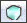
このボタンによって、ビューポートが、unlit ビューモードを使ってレンダリングするようになります。 Hotkey: Alt + 2Lit (リット)
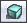
このボタンによって、ビューポートが、lit ビューモードを使ってレンダリングするようになります。 Hotkey: Alt + 4Detail Lighting (細部のライティング)
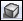
このボタンによって、ビューポートが、detail lighting (細部のライティング) ビューモードを使ってレンダリングするようになります。 Hotkey: Alt + 5Lighting Only (ライティングのみ)
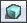
このボタンによって、ビューポートが、lighting only ビューモードを使ってレンダリングするようになります。 Hotkey: Alt + 6Light Complexity (ライティング複雑度)
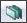
このボタンによって、ビューポートが、light complexity ビューモードを使ってレンダリングするようになります。 Hotkey: Alt + 7Texture Density (テクスチャ密度)
 このボタンによって、ビューポートが、texture density ビューモードを使ってレンダリングするようになります。
Hotkey: Alt + 9
このボタンによって、ビューポートが、texture density ビューモードを使ってレンダリングするようになります。
Hotkey: Alt + 9
Shader Complexity (シェーダー複雑度)
 このボタンによって、ビューポートが、shader complexity ビューモードを使ってレンダリングするようになります。
Hotkey: Alt + 8
このボタンによって、ビューポートが、shader complexity ビューモードを使ってレンダリングするようになります。
Hotkey: Alt + 8
LightMap Density (ライトマップ密度)
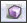
このボタンによって、ビューポートが、lightmap density ビューモードを使ってレンダリングするようになります。 Hotkey: Alt + 0Lighting Only w/ Texel Density (テクセル密度をともなったライトニングのみ)
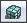
このボタンによって、ビューポートが、lighting only with texel density ビューモードを使ってレンダリングするようになります。 Hotkey: Alt + Hyphen ( - )Game View (ゲームのビュー)
 このボタンを on に切り替えると、ゲームと同じように、ビューポートがレベルをレンダリングするようになります。その場合、通常のゲームでは表示されないアイテムはすべて非表示になります。
Hotkey: G
このボタンを on に切り替えると、ゲームと同じように、ビューポートがレベルをレンダリングするようになります。その場合、通常のゲームでは表示されないアイテムはすべて非表示になります。
Hotkey: G
Lock Viewport (ビューポートのロック)
 このボタンを on に切り替えると、ビューポートは、ビューポートのカメラを再配置させるコマンドを無視します。たとえば、Go to Actor コマンドを使って選択したアクタにフォーカスさせようとしても、無視されます。
このボタンを on に切り替えると、ビューポートは、ビューポートのカメラを再配置させるコマンドを無視します。たとえば、Go to Actor コマンドを使って選択したアクタにフォーカスさせようとしても、無視されます。
Lock Selected Actors to Camera (選択したアクタをカメラにロックする)
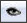
このボタンを on に切り替えると、すべての選択されたアクタの位置と方向が、ビューポートのカメラの位置と方向にロックされます。特定のアクタや場所を見るように配置、方向づける必要のあるアクタを再配置するには、有効な方法です。たとえば、シネマティックスのためにカメラをアニメートしている場合です。Level streaming Volume Previs (レベルのストリーミングボリュームのプレビジュアル化)
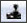
このボタンを on に切り替えると、LevelStreamingVolumes によるレベルのストリーミングアクションが、ビューポート内で表示されるようになります。Post Process Volume Previs (ポストプロセス ボリュームのプレビジュアル化)
 このボタンを on に切り替えると、PostProcessVolumes によるポストプロセスへの変更が、ビューポート内で表示されるようになります。
このボタンを on に切り替えると、PostProcessVolumes によるポストプロセスへの変更が、ビューポート内で表示されるようになります。
Camera Movement Speed (カメラの移動スピード)


 このボタンを左クリックする毎に、使用可能なカメラの移動スピードを次々に循環させながら選択することができます。このボタンを右クリックすると、メニューが開き、スピードを直接選択することができます。
このボタンを左クリックする毎に、使用可能なカメラの移動スピードを次々に循環させながら選択することができます。このボタンを右クリックすると、メニューが開き、スピードを直接選択することができます。
Play In Viewport (ビューポートでプレーする)
 このボタンをクリックすると、現在のビューポートで直接プレーできるように、現在のレベルがロードされます。
このボタンをクリックすると、現在のビューポートで直接プレーできるように、現在のレベルがロードされます。
Tear Off Floating Copy (フローティングコピーを引き離す)
 このボタンをクリックすると、新しいフローティングコピーが作成されます。これは、現在のビューポートの、エディタにドックされていない別個のウィンドウを意味します。
このボタンをクリックすると、新しいフローティングコピーが作成されます。これは、現在のビューポートの、エディタにドックされていない別個のウィンドウを意味します。
Maximize Viewport (ビューポートの最大化)
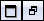
このボタンを on に切り替えると、現在のビューポートが最大化されます。これによって、レベルエディタのビューポート領域全体を占めるようになります。off に切り替えると、ビューポートは元のサイズと位置に戻ります。